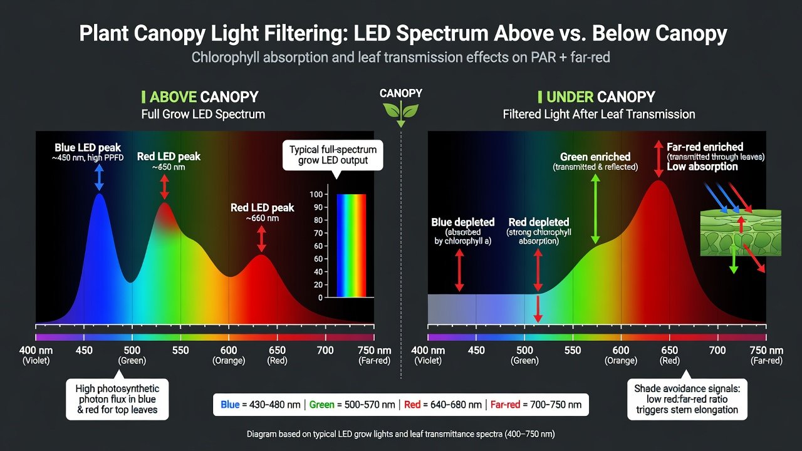

Under-canopy and inter-canopy lighting for cannabis in grow rooms
Under-canopy lighting (SCL) and inter-canopy lighting (ICL) supply photons to the bottom canopy, where the top fixtures cannot supply them. In tests with controls, the total light output was equal. In these tests, light at depth made the grade and the uniformity of the bud better more frequently than it increased the total yield. This paper gives information on the light dose, the spectrum, the position of the fixtures and plant training. It also gives information on the effects of the lighting on the heat and the airflow, which most other papers do not include. After you read this paper, you can prepare an SCL or ICL retrofit and calculate the size of its effects on the climate.
Purpose and scope
A top fixture gives light to the top of the canopy, but not to all of the plant. The leaves absorb the wavelengths that supply the energy for photosynthesis, mostly red and blue. Thus each layer of leaves removes these wavelengths from the light before the light goes to the next layer. The light goes through three or four layers of leaves. Then the bottom third of the canopy receives only a small fraction of the light that is necessary for full bud size. As a result, the buds in this zone do not increase to full size.
Under-canopy lighting (SCL) and inter-canopy lighting (ICL) supply photons to the bottom canopy, where the top fixtures cannot supply them. At this time, the papers on SCL and ICL agree. At equal total flux, the total yield does not necessarily increase. But the grade and the uniformity become better. The bottom of the plant gives flower for sale, and no longer bud with low density and low weight.
SCL and ICL also cause costs. Each watt of light that you add below the canopy becomes a watt of heat. This heat is in the zone of the room that has the lowest airflow. You also make bud with high density in air that did not move before. This paper gives information on the light, the spectrum, the position of the fixtures and the training. It also gives information on the costs of heat and airflow, which most other papers do not include.
Evidence and limitations
We want each paper to be correct. Thus we examine each paper for information that is not solid. This information comes from the view of one grower, from a small number of sources, or from grower methods that have no controlled test. We identify this information, and we do not show it as solid.
Frequently there is no paper for the decision that you must make. Then we use the reports of other growers and the methods that work in the rooms that we know. This information can help you, but it is not the result of a laboratory test. Use the methods that work for your plants, for your room and for your meters. If a table does not agree with your crop, use the data from your crop and record the difference.
- The top canopy filters the spectrum. The light below it has more green and far-red, and less blue and red, than the light above it.
- The bottom flower sites frequently do not receive sufficient light for the grade and the fill of the flower.
- SCL and ICL in commercial rooms, and control of the risk of bleaching when the distance to the plant is short.
- A minimum PPFD for viability that is the same for all bottom flowers.
- Procedures for a sealed room with a continuous high ACH, which remove the CO₂.
If you find an error, make a report. We will correct it. Make the report on GitHub, with the name of the paper and the information that is incorrect. If you have a source, include it: Make a report of an accuracy problem. The regulations, labels and licenses of your area always override each procedure in these papers. The label weak in a paper shows the points where the risk of an error is highest.
Light deficit in the bottom canopy
Photosynthesis is the change of light energy to sugars in a leaf. The plant uses the sugars for growth. Leaves absorb the wavelengths of light that photosynthesis uses with very high efficiency. The top leaves remove the red and blue wavelengths from the light before the light goes to the next layer of leaves. Each next layer does the same.
A top canopy has a good PPFD (photosynthetic photon flux density) of 800–1 200 µmol·m⁻²·s⁻¹. Frequently, the PPFD at the basal bud sites is only 100–200 µmol. This PPFD is much less than the approximately 400–500 µmol at which cannabis makes flower of full size and with a good grade for sale.
Growers use the name larf for bud with low density and low weight on the bottom third of the plant. Larf has grade B or C, and thus it decreases the average grade of the harvest. The work of trimming larf is the same as the work of trimming grade A tops. The bottom canopy gives low results, but weak genetics are not the cause. The cause is that the bottom canopy receives a very small quantity of light.
| Zone | PPFD | Information |
|---|---|---|
| Top canopy | 800–1 200 µmol | Usual value below an LED fixture |
| Basal bud sites | 100–200 µmol | The PPFD after the leaves of the canopy absorb light |
| Frequent range in a commercial grow room | 300–600 µmol | The usual target for the bud in the bottom canopy to increase to full size. It is a target, and not the minimum PPFD that the plant must have. |
- SCL (under-canopy lighting): bars on the bench, on the edges of the pots or on the floor. The bars give light up to the bottom of the plant.
- ICL (inter-canopy lighting): bars that hang in the canopy, between the branches, in the basal and middle zones.
- The two methods supply light to the bottom of the plant. The positions of the bars are different. Thus the effects on airflow are different.

Data on yield, quality and uniformity
All the marketing material of the suppliers shows ‘the yield increases 20–60%’ and gives no source. The data from papers with peer review and from controlled tests in a commercial grow room show where the better results come from. Thus these data help you more.
Hawley and other authors, 2018. The group at Guelph did the first controlled test of under-canopy lighting on cannabis. The paper on this test is in HortScience[1]. With red-blue SCL and with RGB SCL, the yield and the THC in the bud in the bottom canopy increased. The change was statistically significant.
The mechanism is a better supply of light to the bottom canopy. This supply gives better results than when you increase the PPFD of the top fixtures. All work on SCL and ICL starts from this mechanism. One result is important. In the second cycle, the group kept the growth at the bottom of the plant (and did not remove it), and the effect on the yield was larger. With SCL, the method of defoliation is the opposite (Section 7).
2025, top light compared with SCL and with ICL. A test in Plants compared the usual top light directly with SCL and ICL[2]. ICL gave the best results, and the two methods made the energy-use efficiency better. The output for each watt increased. More power was not the only cause.
| Measurement (ICL compared with the top-light control) | Result |
|---|---|
| Dry inflorescence yield | +30% (29.95%) |
| THC content | +24% (24.4%) |
| Total terpene concentration | +12% (12.5%) |
Fluence / Texas Original. This test shows the limits of the other results[3]. At equal total flux, ICL moved photons into the canopy. ICL did not always increase the total yield compared with top light only. But ICL increased the size of the bud in the bottom canopy and made the grade better (B/C to B/A), with much less variation.
In a market with low prices, the margin comes from the grade and the uniformity of the product. It does not come from the total yield.
If a supplier shows ‘+40% yield’, get the total flux of this test from the supplier. When you add fixtures, you add photons, and the yield increases. This effect is not important for a test of SCL. The result that the data show is this: at the same total power, the grade is better and the uniformity is better. This result is from the controlled tests.
Data from commercial grow rooms show that you can get an average that is 25–35% better[7]. You get this result only when three conditions are correct. First, the cultivar is correct. Second, you decrease the number of plants to make space for the fixtures and the airflow. Third, you make the other changes that are in this paper. You can get this result, but it is not automatic.
Selection of the spectrum below the canopy
The error that has the highest cost in under-canopy lighting is the selection of the spectrum. Most under-canopy products have a spectrum with a high fraction of red (a high-red spectrum). These products have a low cost, they make photons with high efficiency, and their specifications show a ‘powerful’ product. But a high-red spectrum is incorrect below the canopy, and tests show this.
Photobleaching occurs when a leaf receives more light energy than its pigment system can use. The pigments break, and the color and the function of the tissue decrease. Do not put a high-red bar at a short distance from a bottom canopy that has high density. The bar causes photobleaching of the same flower that you want to keep.
In the ICL tests of Fluence, the treatments with a red fraction of 80% and 100% caused photobleaching[3]. The bud in the bottom canopy had less pigment, and its quality decreased. Fluence then decreased the red fraction to 60%.
There are two causes. First, the top leaves absorb the blue and red wavelengths when the light goes through the canopy from the top to the bottom. Before you add the bars, the light in the middle and bottom canopy has a high fraction of green and far-red wavelengths. This light is not balanced. More red light on top of this spectrum is the opposite of the light that the plant must have.
Second, the two reaction centers of photosynthesis (photosystem I and photosystem II) must receive approximately equal quantities of light energy for operation with high efficiency. Light of only one wavelength, such as red, makes these two quantities different.
Use a balanced, broad-spectrum light below the canopy. This light is nearer to sunlight than a high-red spectrum. A broad-spectrum light decreases the risk of bleaching and, at the same time, supplies the energy for photosynthesis[4]. In the tests of Hawley, red-blue light gave results with less variation, and RGB light changed the terpenes more. Broad-spectrum white light with a measured fraction of red is the safe selection, and it gives good results.
Use far-red (700–750 nm) carefully, and do not use it as the standard spectrum. There is one good effect. If you add far-red to a red or white light source, the efficiency of photosynthesis increases. It is then higher than with only red light, only white light or only far-red light. The two photosystems use different wavelengths, and far-red supplies the photosystem that red light does not supply. Far-red light at the end of the day increased the yield of cannabinoids in some cultivars[5].
There is also one problem. Far-red is the primary signal that a plant uses to find shade from plants near it. When a plant receives this signal, the stems become longer in the direction of more light. This growth has low density, and you do not want it in the bottom canopy. Set the dose carefully. More far-red is not better.
| Spectrum | Use | Effect |
|---|---|---|
| High-red spectrum (80–100%) | Do not use | Causes bleaching of the bud in the bottom canopy. The bottom canopy has a high fraction of red before you add the bars. This spectrum adds more red. |
| Broad-spectrum white light with a medium fraction of red | Standard | The lowest risk of bleaching. Balanced energy for the two photosystems. Tests show a higher yield and a better grade. |
| Red-blue | Good | The profile of cannabinoids and terpenes has less variation (Hawley) |
| RGB | For some conditions | A larger change of the terpenes. The profile has more variation. |
| Far-red added (with a set dose) | Use carefully | The efficiency of photosynthesis increases, and the yield of cannabinoids can increase. But far-red causes stretch. Control the dose. |
PAR targets and added light
Do not try to supply the same intensity at the floor as at the top of the canopy. Increase the light in the zone that does not receive sufficient light. The value must be more than the threshold at which the bud can increase to full size. Do this with no bleaching.
| Zone | PPFD with no added light | Target with SCL or ICL | Task |
|---|---|---|---|
| Apical (tops) | 800–1 200 | No change | The top fixtures cause this value. Do not try to increase it. |
| Middle | 300–450 | 500–700 | ICL is for this zone. The grade can become better the most here. |
| Basal | 100–200 | 300–600 | Increase the value to more than the approximately 400 minimum for viability. |
Calculate the added flux at depth, and do not use the watts of the bar. A small quantity of added light is usually sufficient to get more than the threshold. This quantity is approximately 25–60 W·m⁻² of installed under-canopy fixtures, and the value changes with the positions of the fixtures. If the flux is more than the point of bleaching, you add heat and the quantity of pigment decreases. Thus the result is not good.
To do a test of SCL, first operate it at a constant total flux for the facility. Decrease the flux of the top fixtures by a small quantity, and add this flux at depth. Then measure the grade and the uniformity. This test shows the effect of the position of the light, with no effect from more light. More light gives more yield, but this effect is not important. After this test, you can increase the total flux if you want.
How leaves adapt to the light in their environment
The photosynthetic capacity of a leaf is not constant. While the leaf increases in size, it makes the structures for photosynthesis. These structures include the internal structures, the enzymes and the pigments that give protection against too much light. The leaf makes them for the light intensity that it receives during this stage.
A leaf that increases in size in low light makes thin tissue with a low photosynthetic capacity and weak protection. This tissue is not defective, because it is correct for its conditions. The name for this effect is photoacclimation.
Rodriguez-Morrison, Llewellyn and Zheng (2021) measured this effect directly in cannabis[6]. They compared leaves that adapted to approximately 91 µmol with leaves that adapted to approximately 1 238 µmol. At high intensity, the two groups of leaves had rates of photosynthesis with a difference of approximately 50%. The cultivar was the same, but the light history was different, and thus the photosynthetic capacity was different.
First, one leaf is not a correct measure of the full canopy. The same test shows that one leaf has light saturation at a low intensity. The yield of all of the plant continues to increase at much higher intensities. The yield of dry inflorescence increased at a constant rate up to 1 800 µmol (the highest intensity in the test). The curve for one leaf became flat at a much lower intensity. Do not use measurements of the light saturation of a leaf to set the targets for under-canopy lighting.
Second, the bottom leaves that you will light increased in size in shade. Their photosynthetic capacity is the capacity of shade leaves. If the light increases too much and too quickly, the protection of the leaf cannot change at a sufficient rate. The leaf cannot safely remove the energy that is more than it can use. As a result, the energy causes damage to the tissue before the leaf can make sugars. This damage is photoinhibition.
New leaves adapt to the new light much better than leaves in shade that have full size. This effect is the mechanism for a ramp of the intensity. We recommend that you use a ramp, and that you do not start at full power (Section 10).
Solid: the light history of a leaf changes the photosynthetic capacity of the leaf. Tests on cannabis show this. Grower method (a small number of papers): a ramp procedure with set values for the intensity changes the yield of cannabis. No paper gives the result of a test that compares ramp procedures with a constant intensity.
We recommend that you use a ramp because of the mechanism of acclimation. The mechanism shows that a ramp decreases the risk of photoinhibition in tissue that increased in size in shade. No test gives the values for a ramp.
Position and installation of fixtures
SCL on the bench or the floor. The bars are on the edges of the pots or on a low structure, and they send light up to the basal bud sites:
- Point the bars up and in the direction of the plants. This position is the easiest to install and to clean. It has the smallest effect on your canopy.
- Distance from the bud. Keep a sufficient distance between the bars and the nearest bud. This prevents damage to the bud. The risk of bleaching increases when the distance decreases and when the red fraction increases. A broad-spectrum light lets you put the bars at a shorter distance.
- Uniformity of the light. Many thin bars that you connect to each other, with light that overlaps, give better results than a small number of point sources. Make a PPFD map (Section 10). Measure the PPFD. Do not use an estimate.
ICL in the canopy. Bars hang in the branches in the basal and middle zones:
- ICL is better for high genotypes that have no pruning. ICL has the largest effect on this plant structure. The strongest numbers in the tests came from this structure.
- Decrease the number of plants. The bars in the canopy must have spaces between the plants, and thus you have space for a smaller number of plants. The data from commercial grow rooms include this change.
- Water must not go into the bars. The bars must be easy to clean and must connect to each other. The bars are in a zone with high humidity, where personnel apply sprays and do the trimming. Fixtures with an IP rating and DLC certification (necessary for a rebate) are the minimum.
Plant training for under-canopy lighting
Training makes a difference between two groups of operators. One group gets the 30% result. The other group has bleaching at the bottom of the plant and rot in the middle of the canopy. Under-canopy lighting and your training method are one system, and not two.
The method of lollipopping changes to the opposite. The usual method is to remove the bottom 20 cm (8 in) of the plant, with the basal bud sites and the foliage. This method has the name lollipopping. Growers use it because this growth is in shade, does not help the plant and causes rot. When you give light to this growth, the opposite is correct.
In the second cycle of Hawley, the group kept the bottom growth on the plants, because SCL made this growth give yield. Before SCL, this growth did not help the plant. If you give light to the bottom and then remove the growth, the light goes to stems with no leaves. The cost of the fixtures gives no result.
Do the work in Sections 8 and 9 before you keep the bottom growth for the light. Growers remove bottom growth to get airflow and to prevent rot. If you keep this growth for the light, you do the opposite. You make bud with high density in the zone with the lowest position, the highest humidity and the lowest airflow. If you give light to the bottom and do not correct the air, the larf can change to botrytis.
- Keep: the basal bud sites and the leaves that supply sugars to them. These sites and leaves receive light and give yield.
- Remove: large fan leaves that make shade on the bud sites that have new light. Also remove the leaves that keep the humidity high near these sites. Remove only these leaves.
- Move the leaf before you cut it, where possible. Put the leaf in a position where it does not make shade. Do not remove leaf area.
- Canopy of equal height (SCROG): a canopy on a trellis, with equal distances between the plants, lets the ICL bars go through the canopy. It also lets air move. A canopy with plants too close together stops the movement of air.
Time for defoliation: do the defoliation for the plant structure at the usual times (approximately day 21, and again at approximately day 42 with less defoliation if the canopy continues to have high density), but change the target. You make spaces for airflow and remove shade from bud sites that receive light. You do not remove leaves from a zone that gives no yield. In the last stage of flowering, defoliate only a small quantity. Strong defoliation in the last stage causes changes in transpiration that you cannot calculate, in a zone where you made the humidity high.
Heat load from under-canopy lighting
Do not use the marketing information that LEDs ‘run cool’. For the size of an HVAC unit, this information is not correct. In a sealed room, almost all of the electrical power that you supply to a fixture becomes heat that the HVAC unit must remove. A 600 W LED and a 600 W HPS cause the same cooling load. The LED is different: it gives your target PPFD with a smaller number of watts. You install a smaller number of watts, and not fixtures that make less heat for each watt.
Plants move water from the roots to the leaves and release it as vapor. This decreases the temperature of the leaf, but it adds moisture to the room air. Transpiration is this continuous release of water. The energy for the evaporation of this water stays in the air as a latent heat load. This load does not stop when the lights are off. The sections below give more information on this effect.
- The sensible heat that you add is equal to the watts of the fixture: heat (W) = fixture watts. In a sealed room, all the electrical input becomes heat.
- To get the value in BTU/hr for the specification sheet of an HVAC unit, calculate: BTU/hr = fixture watts × 3.412
- Example for a room of 20 m² (215 ft²): 25 W/m² × 20 = 500 W of installed under-canopy lighting
- 500 W of sensible heat = 1 706 BTU/hr on the specification sheet of an HVAC unit
- Cooling capacity: total watts ÷ 1 000 = kW of cooling that is necessary. Add 20% for headroom (30% for a sealed room with carbon dioxide enrichment). Increase the result to the next larger value.
The 500 W adds to the heat from the top fixtures, the dehumidifier (almost 100% of its watts becomes heat in the room), the equipment and the personnel (approximately 117 W or approximately 400 BTU/hr for each person). Before SCL, lighting is usually 70–85% of the total cooling load of the room. A retrofit makes your largest load larger by a value that you can calculate. Select the size of the HVAC unit carefully. Do not think that your HVAC unit has sufficient margin.
How to measure the load in your room: Add the watts that you measure from the labels on the drivers and with a clamp meter. Do not use the watts in marketing specifications. Add the load of the dehumidifier (approximately 1:1 to heat). Add the loads of the personnel and of the air that comes into the room through vents and leaks.
Then make sure that the total agrees with the room. Record the rate at which the temperature increases when the lights are on. If the temperature of the room increases more quickly than your estimate in watts shows, you did not include one of the loads.
Keep the dehumidification isolated from the cooling. When the lights go off, the sensible heat decreases to zero immediately. The plants continue to transpire and release moisture to the room air.
If the cooling capacity is too large and the dehumidification is not isolated, the temperature decreases very quickly. The relative humidity then increases to the dew point, and condensation occurs on the leaves. These conditions are good for botrytis and powdery mildew. SCL makes this risk larger because it adds bud mass that transpires in the bottom of the canopy.
The microclimate in the bottom canopy
You make flower in the zone of the room that has the lowest airflow. In the bottom canopy, the air does not move and the humidity collects. Botrytis germinates in the inner part of colas with high density and moves out. Before SCL, this zone had larf or stems with no leaves. After SCL, the bud in this zone has high density and transpires. The airflow problem is important, because the lighting in the bottom canopy causes it.
- Zones with no air movement. The circulation fans above the canopy move the air at the top. The basal zone is in air that does not move, below the flow of air.
- More moisture at the bottom. The new bud mass transpires in the zone that has the lowest air movement. The moisture cannot go away.
- Cold floor and warm air. Condensation occurs first near the pots and the bottom leaves. The new flower is in these positions.
- Air exchange of the full room: the target is one full air exchange in 1–3 minutes
- Necessary flow rate: room volume (m³) ÷ air exchange interval (minutes). Example: 68 m³ (2 400 ft³) ÷ 2 = 34 m³ for each minute (1 200 CFM)
- Effect of a carbon filter: a carbon filter adds approximately 20–25% of static pressure. Select a fan with 25% more capacity. Or use the fan rating at 62 Pa (0.25″ water column), and not the rating in free air.
This method is for the total air exchange. It does not correct the microclimate below the canopy. The average airflow in the room does not show the zone at the bottom where the air does not move. You must also have air movement at the bottom of the canopy:
- Fans at a low position that point through the bottom canopy. When you give light to the bottom, these fans are the most important part.
- Use a light flow of air, and not a jet. The air must have turbulence and must bend the leaves. A jet of air that you point at the buds dries the trichomes and causes damage to the leaves.
- Approximately one oscillating fan for each 4–6 plants is the density to start with. Point more of the fans at the bottom zone.
- Make the structure of the canopy open (Section 7). Then air can go through the canopy. Fans cannot correct a canopy with plants too close together.
Vapor pressure deficit (VPD) is the quantity of water vapor that you must add to the air to saturate it. Dry, warm air has a high VPD and removes moisture from the leaves at a high rate. Cool air with high humidity has a low VPD and removes moisture at a lower rate.
Control the VPD where the bud is, and not only at the sensor of the room. Good targets for flowering are approximately 0.8–1.2 kPa in the first stage of flowering and 1.2–1.6 kPa in the last stage. Keep the leaf temperature approximately 6–8 °C (11–14 °F) higher than the dew point. The difference is most important when the lights go off. Put a sensor in the bottom canopy. The basal zone shows a higher humidity than the average of the room, and this difference is the risk that SCL adds.
Make the airflow and the dehumidification better when you install the lighting. Include the cost of the two tasks in the cost of SCL. If you do not do the two tasks, do not install SCL. SCL adds bud mass in the zone with the highest humidity and the lowest airflow. The bud mass transpires into air that does not move, and the relative humidity increases when the lights go off.
If only one of these problems occurs, it is not dangerous for the crop. When the problems occur together, they cause botrytis. The lighting is only as good as the airflow and the dehumidification that you install with it.
Commissioning under-canopy lighting
Do not install the fixtures to a specification sheet and then go away. Install, measure, adjust and record. The value of SCL is in the numbers for the bottom canopy, and thus you measure the bottom canopy.
- 1Baseline PPFD mapBefore you install the bars, measure the PPFD at grid points in the apical, middle and basal zones. Use a quantum sensor, and measure in three directions at each point. These values are your ‘before’ values.
- 2Install for uniformity, not for the peak valueConnect the bars to each other, with light that overlaps. This method gives better results than point sources that make zones of high intensity. At the start, set a large distance between the bars and the plants. You can always move the bars nearer.
- 3Make the PPFD map againMake sure that the middle zone and the basal zone are in the target ranges (500–700 and 300–600 µmol). Find the zones with very high intensity near the fixtures. These zones are the risks of bleaching.
- 4Increase the intensity slowlyIncrease the under-canopy intensity slowly, in a period of some days. This method lets you find bleaching in the first stage. Also, leaves that increased in size in shade must adapt again before they can use the light correctly (Section 5).
- 5Measure the air againPut a temperature sensor and a relative humidity sensor in the basal zone. Compare the values with the average of the room. Add fans at a low position until there is no difference. Make sure that you keep the VPD and the leaf-temperature difference from the dew point correct at depth.
- 6Do a check of the heat load againRecord how much the temperature increases when the lights are on. Compare it with your estimate of the heat in watts. Make sure that the cooling and the isolated dehumidification keep correct conditions when the lights change from on to off.
- 7Keep the flux constant in the first cycleExamine the grade and the uniformity to find the effect of the change in the position of the light. Do this before you increase the total flux.
- 8Record the data for each cultivarThe effect is different for each cultivar. The bleaching threshold, the stretch with far-red and the change in grade are different. Genotypes that are high, have high density and have no pruning get the largest effect. Some cultivars with very high bud density get a small effect and rot easily.
Monitor these items in this sequence: bleaching (in days, near fixtures), basal relative humidity and dew point (each time the lights go off), and stretch (if you use far-red). Then monitor uniformity of the grade (at harvest) and energy-use efficiency (in each cycle). The energy-use efficiency is the number that shows if the capital cost is correct.
Expected results and limitations
The revenue from under-canopy lighting comes mostly from the grade and not from the total yield. The papers show one primary mechanism for revenue: the change of B/C-grade bottom bud to A/B-grade flower for sale. The variation also decreases. In a market with low prices, these results have more value than more biomass.
| Item | Effect | Information |
|---|---|---|
| Better bud grade (from B/C to A/B) | Revenue increases | The primary source of revenue. The data for this source are the best. |
| Uniformity and less variation | Revenue increases | The quality of the product is stable, and you discard less product. |
| Yield at equal flux | Approximately the same | The grade increases. The total yield does not always increase. |
| Capital cost of the fixtures and the installation | Capital cost increases | Use fixtures with an IP rating and with DLC certification for a rebate |
| Cooling and dehumidification that you add | Capital cost and operating cost increase | See Sections 8 and 9. This item is not easy to find. |
| A smaller number of plants (for the spaces of ICL) | Plant density decreases | A smaller number of plants, and each plant gives better results |
| More use of electrical power | Operating cost increases | The better energy-use efficiency decreases this cost, but not fully |
In commercial grow rooms, an average that is 25–35% better is possible[7]. You get this result only if three conditions are correct. The cultivar is correct, you keep the number of plants low, and you make the changes to the climate.
Calculate the result with your range of grades and your costs for power and HVAC. Do not use the number of a supplier. If most of the bud in your bottom canopy has a grade for sale before you install SCL, the possible result is smaller. If you discard larf at each harvest, this larf is the product that SCL can change into flower for sale.
References
- Hawley D, Graham T, Stasiak M, Dixon M (2018). Improving cannabis bud quality and yield with subcanopy lighting. HortScience 53(11):1593-1599. https://doi.org/10.21273/HORTSCI13173-18
- (2025). Subcanopy and inter-canopy supplemental light enhances and standardizes yields in medicinal cannabis (Cannabis sativa L.). Plants 14(10):1469. https://doi.org/10.3390/plants14101469
- Cannabis Business Times / Fluence (2024). Intercanopy lighting trials show compelling increases in cannabis quality and consistency (Texas Original; Poel, Hawley) — grade uplift at equal flux, photobleaching at 80-100% red. (source not from a journal, for example from a manufacturer) https://www.cannabisbusinesstimes.com/
- Fluence (2026). Maximizing cannabis yields with intercanopy and subcanopy lighting — broad-spectrum recommendation, bleaching risk, ROI via uniformity. (source not from a journal, for example from a manufacturer) https://fluence.science/
- (2025). The effects of far-red light on medicinal cannabis. Scientific Reports 15. https://doi.org/10.1038/s41598-025-99771-6
- Rodriguez-Morrison V, Llewellyn D, Zheng Y (2021). Cannabis yield, potency, and leaf photosynthesis respond differently to increasing light levels in an indoor environment. Front. Plant Sci. 12:646020. https://pmc.ncbi.nlm.nih.gov/articles/PMC8144505/
- AROYA. Understanding under-canopy lighting — realistic 25-35% averages, conditional on cultivar and plant-count accommodations. (source not from a journal, for example from a manufacturer) https://aroya.io/
Each citation in the paper, for example [1], refers to an item in this list. Each item is a primary source or an instruction from an authority, unless the item shows a different type. The results of cannabis tissue culture change much with the genotype. Before you use the dilutions, hormone doses and local regulations, make sure that they agree with the primary sources.